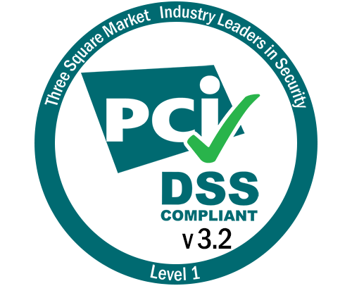
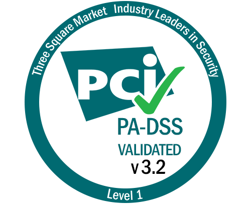

TERMS OF USE AND PRIVACY POLICY
Thank you for choosing to shop with Three Square Market, Inc. (“32M”). The market you are using is owned by an operator (“Operator”) who has a contract with 32M for the use of its software and marketing services (32M and the Operator may collectively be referred to herein as “we” or “us”). The name of your Operator should be on or near the kiosk you are using. We recommend contacting your Operator for all inquiries, including questions about this Terms of Use and Privacy Policy (the “Policy”), as that Operator will be best able to reply to you about your use of the market. Please be advised that when you visit or shop at this store, shop at 32Market.com, or use 32M applications for mobile or use 32M software in connection with any of the foregoing (collectively, "32M Services"), you are agreeing to be bound by this Policy.
Our Terms of Use
1. General Information. The information provided at this kiosk, on 32market.com (collectively and together with our mobile application, the “Site”), is for general informational purposes only. All information on the Site is provided in good faith, provided, however, that no representation nor warranty of any kind, express or implied, are provided regarding the accuracy, adequacy, validity, reliability, availability, completeness, or security, of any information on the Site or of the Site itself. All pricing is subject to change without notice, product availability is subject to change without notice, and all purchases are subject to this Policy. The Policy is available here, or through written request. Requests for copies of this Policy should be sent to your Operator as identified on the kiosk, or to Three Square Market, Inc.,3329 Casey Street, River Falls, Wisconsin 4022, Attn: Legal Department.
2. No Claims. Kiosk sales are “as-is” and “whereas”, and except for the purchase price of the goods or services purchased, under no circumstances shall the Operator or 32M have any liability to you for any loss or damage of any kind incurred as a result of the use of the Site, or reliance on any information provided on the Site. Your use of the Site, and your reliance on any information on the Site is solely at your own risk. Also, the Site may contain (or you may be sent through the Site to) links to other websites or content belonging to or originating from third parties, or links to websites and features in banners or other advertising. You follow such links at your own risk. We make no representation that such external links are investigated, monitored, or checked for accuracy, adequacy, validity, reliability, availability, completeness, or security.
3. Electronic Communication. When you use any 32M Service, or send e-mails to us, you are communicating with us electronically. Through your use of any 32M Service, you consent to communicate with us electronically. We will communicate with you by e-mail or by posting notices on this site or through the other 32M Services. You agree that all agreements, notices, disclosures and other communications that we provide to you electronically satisfy any legal requirement that such communications be in writing.
4. Payment. The 32M Services accept payment cards issued by a variety of sources. Payments made by one of the available payment cards are subject to this Policy as well as the terms of service of the card issuer. Payments are processed immediately and, if payment is made in the United States, will appear on your payment card or bank statement as 32Market.com. If payment is made outside of the United States, the name of the Operator will most likely appear on your payment card or bank statement.
5. Limited Grant. Subject to your compliance with this Policy, you are granted a limited, non-exclusive, non-transferable, non-sublicensable license to access and make personal use of the 32M Services and the software supporting the 32M Services (“32M Software”). This license does not include any resale or commercial use of any 32M Software, 32M Service, or its contents; any collection and use of any product listings, descriptions, or prices; any derivative use of any 32M Software, 32M Service or its contents; any downloading or copying of account information for the benefit of another merchant; or any use of data mining, robots, or similar data gathering and extraction tools. All rights not expressly granted to you in this Policy are reserved and retained by the Operator and/or 32M, or its licensors, suppliers, publishers, rightsholders, or other content providers. No 32m Software, 32M Service, nor any part of any 32M Service, may be reproduced, duplicated, copied, sold, resold, visited, or otherwise exploited for any commercial purpose. You may not frame or utilize framing techniques to enclose any trademark, logo, or other proprietary information (including images, text, page layout, or form) contained within the Site without express written consent. You may not misuse the 32M Software or 32M Services. You may use the 32m Software and 32M Services only as permitted by law. The licenses granted hereunder terminate if you do not comply with this Policy.
6. Account. If you establish an account with the Operator, you are responsible for maintaining the confidentiality of your account and password, and for restricting access to your computer, and you agree to accept responsibility for all activities that occur under your account or password. Funds deposited into an account should be available immediately. If you are under 18, you may use the 32M Services only with involvement of a parent or guardian. Both the Operator and 32M reserve the right to refuse service, terminate accounts, remove or edit content, or cancel orders at their sole discretion.
7. Product Descriptions. An attempt has been made to be as accurate as possible when describing the products available through this Site. However, there is no warranty that product descriptions or other content of any 32M Service is accurate, complete, reliable, current, or error-free. While an effort has been made to ensure that product information is correct, on occasion manufacturers may alter their ingredient lists. Actual product packaging and materials may contain more and/or different information than that shown on the Site. You should not solely rely on the information presented, and you are advised to always read labels, warnings, and directions before using or consuming any product. For additional information about a product, please contact the manufacturer. Content on this site is for reference purposes and is not intended to substitute for advice given by a physician, pharmacist, or other licensed health-care professional. You should not use this information as self-diagnosis or for treating a health problem or disease. Contact your health-care provider immediately if you suspect that you have a medical problem. Information and statements regarding dietary supplements have not been evaluated by the Food and Drug Administration and are not intended to diagnose, treat, cure, or prevent any disease or health condition. We assume no liability for inaccuracies or misstatements about products.
8. Tampering. You may not, and you will not encourage, assist or authorize any other person to copy, modify, reverse engineer, decompile or disassemble, or otherwise tamper with, this Site or the 32M Software, whether in whole or in part, or create any derivative works from or of this Site or the 32M Software.
9. No Warranty. TO THE FULLEST EXTENT PERMISSIBLE BY APPLICABLE LAW, ALL WARRANTIES, EXPRESS OR IMPLIED, INCLUDING, BUT NOT LIMITED TO, IMPLIED WARRANTIES OF MERCHANTABILITY AND FITNESS FOR A PARTICULAR PURPOSE ARE HEREBY DISCLAIMED. NO WARRANTY IS PROVIDED THAT THE 32M SERVICES, INFORMATION, CONTENT, MATERIALS, PRODUCTS (INCLUDING SOFTWARE) INCLUDED ON OR OTHERWISE MADE AVAILABLE TO YOU THROUGH THIS SITE OR THROUGH ELECTRONIC COMMUNICATIONS, ARE FREE OF VIRUSES OR OTHER HARMFUL COMPONENTS. WE WILL NOT BE LIABLE FOR ANY DAMAGES OF ANY KIND INCLUDING, BUT NOT LIMITED TO DIRECT, INDIRECT, INCIDENTAL, PUNITIVE, OR CONSEQUENTIAL DAMAGES, ARISING FROM YOUR USE OF THIS SITE OR ANY 32M SERVICE, OR FROM ANY INFORMATION, CONTENT, MATERIALS, PRODUCTS (INCLUDING SOFTWARE) INCLUDED ON OR OTHERWISE MADE AVAILABLE TO YOU THROUGH THIS SITE OR ANY 32M SERVICE.
Our Privacy Policy
10. How your personal data is used. Along with your Operator, we are committed to ensuring the privacy of all users of our market kiosks. Here, we will explain how information collected from you is processed, held and stored. This document explains how we use your personal data.
10.1. This section provides you with information about:
a) what personal data is held and processed;
b) in respect of personal data that did not come from you directly, where that data was obtained, and what types of data have been collected;
c) the purposes for which we may process your personal data; and
d) the legal grounds on which your data is processed.
10.2. As a customer using markets and kiosks, you have options as to how to shop. You may choose to set up an account with your Operator, make a lump-sum prepayment using your credit or debit card, and draw down from this sum each time you shop. Or, you can simply pay each time you shop.
10.3. Account data. If you choose to set up an account with your Operator, your Operator may process information about you that you provide as part of the account set-up ("account data"). This account data may include your name, address, email address, user name and password, your product purchases, and how much you have spent each month. If you are in the U.S. and would like to make a deposit using 32market.com, you have the option to enter in your credit card information to save for future deposits. This account data may be processed each time you shop. Your Operator may use this information for the purposes of creating your account, administering your account and purchases, and for sending you receipts for your purchases by email. Please note that, when using the kiosk, neither we nor your Operator collects or holds or has access to payment details such as your debit or credit card number, bank account number or sort code. The legal basis for this processing is for the purposes of performing our contract with your Operator, which Operator is taking steps at your request as part of entering into a contract with you.
10.4. Purchase Data. If you do not have an account with the Operator and are simply making a one-off purchase, none of your personal data will be collected.
10.5. Special categories of data. When you create an account, you can choose whether or not you want to activate the digital fingerprint payment / login process. You do not need to activate the digital fingerprint option in order to open and use an account, and the use of such function is at your sole discretion. If you do want to use this function, you will need to provide certain biometric data around the impression of your fingerprint. The data gathered from the impression of your fingerprint is only a stored mathematical representation—never images of your finger itself. This data is used to allow you to login securely instead of entering your user ID and password. Using the fingerprint payment process is optional, and as such, requires your proactive consent and acknowledgment to activate this function.
Other data processing that we may carry out
10.6. Website data. We may process data about your use of our website and services ("website data"). The website data may include your IP address, geographical location, browser type and version, operating system, referral source, length of visit, page views and website navigation paths, as well as information about the timing, frequency and pattern of your service use. The source of the website data is our analytics tracking system. This website data may be processed for the purposes of analysing the use of the website and services. The legal basis for this processing is our legitimate interests, namely security, monitoring and improving our website and services.
10.7. Enquiry data. We may process information contained in any enquiry you submit to us regarding our products or services ("enquiry data"). The enquiry data may be processed for the purposes of offering, marketing, improving, and selling relevant products and/or services to you. The legal basis for this processing is our legitimate interests, namely dealing with and responding to your enquiry appropriately.
10.8. Correspondence data. We may process information contained in or relating to any communication that you send directly to us as opposed to sending to your Operator ("correspondence data"). The correspondence data may include the communication content and metadata associated with the communication. Our website will generate the metadata associated with communications made using the website contact forms. The correspondence data may be processed for the purposes of communicating with you and record-keeping. The legal basis for this processing is our legitimate interests, namely the proper administration of our website and business and communications with users.
10.9. Other processing activities. In addition to the specific purposes for which your personal data may be processed as set out above, your personal data may also be processed where such processing is necessary for compliance with a legal obligation, governmental request, or in order to protect your vital interests or the vital interests of another natural person.
11. Providing your personal data to others.
11.1. Operators. We work closely with our Operators, who own the stores in which our markets and kiosks are situated. Our Operators are the owners and controllers of your data (“Data Controllers”). We are the processors of your data (“data processor”). Operators can access your account data in order to administer your account and monitor the use of their markets and kiosks for statistical purposes. We have appropriate contracts and security safeguards in place with all of our Operators to ensure the security of your data. Except as set forth herein, your personal data is never sent to any third parties. The legal basis on which our Operators allow us access to your account data is our legitimate interests in allowing the Operators to ensure the efficient running and administering of the market and kiosks. The legal basis for this data processing is our legitimate interests in meeting our contractual commitments to the Operator, in managing and administering our relationship and contract with the Operator, and in marketing our products and services to the Operator.
11.2. Our insurers/professional advisers. Your personal data may be disclosed to our and the Operator’s insurers and/or professional advisers insofar as reasonably necessary for the purposes of obtaining and maintaining insurance coverage, managing risks, obtaining professional advice and managing legal disputes.
11.3. Where your personal data is provided to any third party. Where your personal data is shared with any third party, this data processing is protected by appropriate safeguards including a suitable data processing agreement with that third party. In the context of an onward transfer, as a Privacy Shield organization, 32M has the responsibility for the processing of personal information we receive and subsequently transfer to a third party acting as an agent on our behalf. As a Privacy Shield organization, we shall remain liable under the Privacy Shield Principles if our agents process such personal information in a manner inconsistent with the Privacy Shield Principles, unless we prove that we are not responsible for the event giving rise to any damage.
11.4. To comply with legal obligations. In addition to the specific disclosures of personal data detailed above, your personal data may be disclosed where such disclosure is necessary for compliance with a legal obligation, or in order to protect your vital interests or the vital interests of another individual. This may include disclosing your personal data in response to lawful requests by public authorities.
12. Transfers of your personal data outside of the European Economic Area. 32M is situated in the United States of America. As such, your data will be stored on our secure servers provided by Amazon Web Services situated in the United States of America. This includes all data generated in the EEA. In all cases, transfers outside of the EEA will be protected by appropriate safeguards and contracts.
13. Retaining and deleting personal data.
13.1. Processed personal data shall not be kept for longer than is necessary. Your Operator may maintain your personal data as part of the Operator’s account management system, but again, will only maintain such data so long as you continue to be an active customer for the Operator. Dormant accounts will be deleted in a timely manner and in accordance with applicable regulations.
13.2. Unless we contact you and obtain your consent for us to retain your personal data for a longer period, we will retain and delete your personal data as follows:
a) Account data (including special categories of personal data) in respect to a particular account will be anonymised if we find that there has been no activity on that account for 6 consecutive months or more.
b) Website data will be retained for 12 months following the date of last contact or dealing with you, at the end of which period it will be deleted from the system.
c) Enquiry data will be retained for 12 months following the date of last contact or your last system access, at the end of which period it will be deleted from the system.
d) Correspondence data will be retained for 12 months following the date of last contact or your last communication to us, at the end of which period it will be deleted from the system.
13.3. We may retain your personal data where such retention is necessary for compliance with a legal obligation, or in order to protect your vital interests or the vital interests of another natural person.
14. Updates.
14.1. This Policy may be updated from time to time by publishing a new version on our website.
14.2. Updates may require account holders to accept the new version of this Policy, but you should check this page occasionally to ensure you are happy with any changes to this Policy.
14.3. At our sole discretion, we may notify you of changes to this Policy by email.
15. Your rights.
15.1. You may instruct your Operator to provide you with any personal information held about you. Provision of such information will be subject to:
a) your request not being found to be unfounded or excessive, in which case a charge may apply; and
b) the supply of appropriate evidence of your identity (requirements for this purpose may vary from Operator to Operator as the result of jurisdictional differences, but generally a photocopy of your passport certified by a solicitor or bank plus an original copy of a utility bill showing your current address will suffice).
15.2. Personal information may be withheld at your request to the extent permitted by law.
15.3. You may instruct us at any time not to process your personal information for marketing purposes. In practice, you will usually either expressly agree in advance to use of your personal information for marketing purposes, or you will be provided with an opportunity to opt out of the use of your personal information for marketing purposes.
15.4. Your right to access your data. You have the right to ask to confirm whether or not we process your personal data and, to have access to the personal data, and any additional information. That additional information includes the purposes for which we process your data, the categories of personal data held and the recipients of that personal data. You may request a copy of your personal data from the Operator. The first copy should be provided free of charge, but you may be charged a reasonable fee for additional copies.
15.5. Your right to rectification. If any personal data about you is inaccurate, you have the right to have these inaccuracies rectified. Where necessary for the purposes of the data processing, you also have the right to have any incomplete personal data about you completed.
15.6. Your right to erasure. In certain circumstances you have the right to have personal data erased. This will be done without undue delay. These circumstances include the following: it is no longer necessary to hold the personal data in relation to the purposes for which it was originally collected or otherwise processed; you withdraw your consent to any data processing which requires consent; the data processing is for direct marketing purposes; and any personal data has been unlawfully processed. However, there are certain general exclusions of the right to erasure, including where processing is necessary (i) for exercising the right of freedom of expression and information; (ii) for compliance with a legal obligation; or (iii) for establishing, exercising or defending legal claims.
15.7. Your right to restrict data processing. In certain circumstances you have the right for the processing of your personal data to be restricted. This is the case where: you do not think that the personal data is accurate; your data is being processed unlawfully, but you do not want your data to be erased; it is no longer necessary to hold your personal data for the purposes of processing, but you still require that personal data in relation to a legal claim; and you have objected to processing, and are waiting for that objection to be verified. Where data processing has been restricted for one of these reasons, your personal data may continue to be stored. However, we will only process it for other reasons: with your consent; in relation to a legal claim; for the protection of the rights of another natural or legal person; or for reasons of important public interest.
15.8. Your right to object to data processing. You can object to the processing of your personal data on grounds relating to your particular situation, but not to the extent that the legal basis for the processing is necessary for: the performance of a task carried out in the public interest, or in the exercise of any official authority vested in us; or legitimate interests purposes or those of a third party. If you make an objection, your personal information will stop being processed unless we are able to: demonstrate compelling legitimate grounds for the data processing, and that these legitimate grounds override your interests, rights and freedoms; or the data processing is in relation to a legal claim.
15.9. Your right to object to direct marketing. You can object to the processing of your personal data for direct marketing purposes. If you make an objection, the processing your personal data for this purpose will stop.
15.10. Your right to data portability. Where you have given us consent to process your personal data, or where we are processing your personal data for the performance of a contract, you have a legal right to receive a copy of the personal data we hold about you in a structured, commonly used and machine readable format. When a data request is made of us, we will make available all applicable personal data to you in .csv format to be passed to the appropriate third party on your instruction. We will not however process your data in this way if we believe that it may pose a threat to the security of the data.
15.11. Your right to object for statistical purposes. You can object to us processing your personal data for statistical purposes on grounds relating to your particular situation, unless the processing is necessary for performing a task carried out for reasons of public interest. You may also object to the Operator for holding your personal data for statistical purposes, and all such objections should be addressed directly to the Operator.
15.12. Automated data processing. To the extent that the legal basis we are relying on for processing your personal data is consent, and where the processing is automated, you are entitled to receive your personal data from us in a structured, commonly used and machine-readable format. However, you may not have this right if it would adversely affect the rights and freedoms of others.
15.13. Complaining to a supervisory authority. If you think that our processing of your personal data or the holding of your personal data by the Operator infringes data protection laws, you can lodge a complaint with a supervisory authority responsible for data protection. In the EEA, you may do this in the EU member state of your habitual residence, your place of work or the place of the alleged infringement. In the US, please check with local authorities to best determine where to best report your concerns.
15.14. Right to withdraw consent. To the extent that the legal basis we are relying on for processing your personal data is consent, you are entitled to withdraw that consent at any time. Withdrawal will not affect the lawfulness of processing your data prior to the withdrawal.
15.15. Exercising your rights. In addition to the other methods specified above, you may exercise any of your rights in relation to your personal data by written notice to the Operator who will, if necessary, notify us of the exercise of your rights.
Our business clients
15.16. Point of contact data. If you are employed by one of our corporate clients such as our Operators, which has a contractual arrangement with Three Square Market for the provision of services, we may use your information such as your name, email address, telephone number and employment details (the “point of contact data”) to enable us to:
a) provide services to you in accordance with the contract that we have with the Operator;
b) communicate with you regarding the provision of such services;
c) improve the services that we provide and to ensure that we maintain our levels of client care; and
d) marketing our products, services, promotions and offers to the Operator.
15.17. Point of contact data will be retained for the duration of the contract that we have with the Operator and for such period after termination of the contract, or as specified in that contract or agreed between Three Square Market and the Operator. The Operator is the controller of any point of contact data entered into our system. In order to fulfil our obligations to the Operator, we may receive your data in respect of such points of contact direct from the Operator. We will process any such personal data referred to in this paragraph 5.17 strictly in accordance with the instructions of the Operator, not the individual point of contact, including sharing all such data with the main contractor. The legal basis for this processing is our legitimate interests in meeting our contractual commitments to the Operator, in managing and administering our relationship and contract with the Operator, and in marketing our products and services to the Operator.
15.18. Point of Contact Data. PARAGRAPHS 15.1 – 15.15 SHALL NOT APPLY TO POINT OF CONTACT DATA OBTAINED OR PROCESSED BY THREE SQUARE MARKET IN RESPECT OF POINTS OF CONTACT IN CONNECTION WITH AN EMPLOYEE OF AN OPERATOR. IN RESPECT OF SUCH DATA:
A. THREE SQUARE MARKET IS ACTING UNDER ITS CONTRACTUAL OBLIGATIONS TO THE OPERATOR AS ITS DATA PROCESSOR. THE OPERATOR REMAINS THE DATA CONTROLLER;
B. POINTS OF CONTACT SHOULD CONTRACT THE OPERATOR TO EXERCISE THE RIGHTS SET OUT IN THIS SECTION 15.
16. IP Addresses and Cookies. Cookies are very small text files that are stored on your computer when you visit some websites. This system uses cookies to help identify your computer, including where available, your IP address, operating system and browser type, for system administration in order to keep your activity secure, tailor your user experience and remember your preferences. This is statistical data and does not identify any individual. You can disable any cookies already stored on your computer or clear your browser storage, but this may result in losing any preferences which you’ve set previously.
17. Our details.
17.1. This software is owned and operated by Three Square Market, Inc. It is provided in the EEA under license to Three Square Market Limited.
17.2. Three Square Market, Inc., is a Wisconsin corporation, with a registered office at 3329 Casey Street, River Falls, Wisconsin 54022. In the EEA, Three Square Market Limited is registered in England and Wales under registration number 11149434, and its registered office is at 2nd Floor Hygeia House, 66 College Road, Harrow, Middlesex, England, HA1 1BE.
17.3. You can contact us:
a) by post, using the postal address given above;
b) using our website contact form;
c) by telephone, on the contact number published from time to time on our website; or
d) by email, using the email address published from time to time on our website.
18. Data protection officer. Our data protection officer's contact details are: Rick Leib, who can be contacted via email: dpo@tkc32m.com, or telephone: 715.629.9770.
19. Privacy Shield.
19.1. Please be advised that 32M complies with the EU-U.S. Privacy Shield Framework and Swiss-U.S. Privacy Shield Framework as set forth by the U.S. Department of Commerce regarding the collection, use, and retention of personal information transferred from the European Union and Switzerland to the United States. 32M has certified to the Department of Commerce that it adheres to the Privacy Shield Principles (“Principles”). If there is any conflict between the terms in this privacy Policy and the Principles, the Principles shall govern. To learn more about the Privacy Shield program, and to view our certification, please visit https://www.privacyshield.gov/
19.2. As the result of being compliant with Privacy Shield, 32M is subject to the investigatory and enforcement powers of the Federal Trade Commission. Under certain conditions, you may invoke your right to binding arbitration. Also, in certain circumstances, 32M may be liable for the onward transfer of your data to third parties. For additional information regarding these and other Privacy Shield Policies, please visit: https://www.privacyshield.gov/article?id=7-RECOURSE-ENFORCEMENT-AND-LIABILITY.